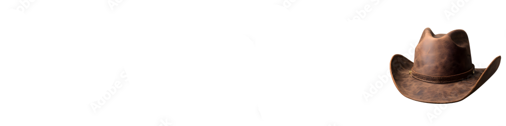

About Us
History
Heritage Hats was founded in 1983 after its owner, inspired by the cowboy lifestyle in Phoenix, learned the craft of hat cleaning and blocking from master hatters and inherited their original 1912 equipment. What began as selling hats from a pickup truck at rodeos has grown into Arizona's largest hat store, offering custom hats, restorations, and a wide variety of styles—serving everyone from everyday customers to celebrities like Ronald Reagan and George Burns.
Restoration Services
Heritage Hat Cleaners, located within Heritage Hats, is the leading hat cleaning and blocking service in the Phoenix-Scottsdale-Cave Creek area, specializing in restoring and reshaping felt hats to customer specifications. Trusted by celebrities and institutions alike, they offer expert cleaning, blocking, and sweatband replacements, typically completing services within three days.
Event/Convention Services
Heritage Hats, Arizona's largest hat store, partners with event planners across Phoenix, Scottsdale, Tucson, and Sedona to provide high-quality hats for conventions and gatherings of 25-1000 attendees. With 30+ years of experience, a wide selection from western to UPF 50+ sun-protection styles, and personal service from owner Rich Glisson, Heritage Hats ensures your guests leave with a fashionable, functional, and memorable souvenir.